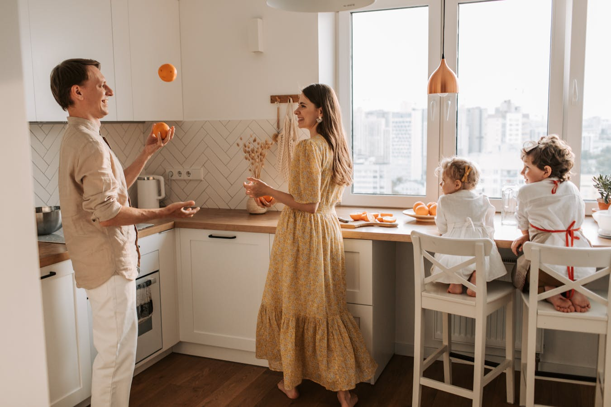

The Program
Seven guided recordings that build a complete mindful eating practice. No fluff. No filler. Just the work that actually changes things.
What you get
This isn't a course with 47 modules and homework you'll never do. It's seven recordings, each one carefully crafted to build on the last.
Listen to one recording. Practice what it teaches. Move on when you're ready. Some people finish in two weeks, some take two months. There's no timeline because this isn't a race – it's a skill you're building for the rest of your life.
Every recording follows the same approach that has built a community of 37,500+ listeners: simple language, no jargon, guided with warmth and honesty. The goal is always the same – to help you see clearly what your mind is doing, so you can work with it instead of against it.

Session by session
Before you change anything about what you eat, you learn to actually be there when you eat. This recording guides you through a simple practice of arriving – putting down the phone, the scroll, the mental to-do list – and being present with your food. Most people are shocked by how rarely they actually taste what they're eating.
Your body knows exactly when it's hungry and exactly when it's had enough. But that signal gets buried under years of habit, schedule, and emotional conditioning. This recording teaches you to tune back into the physical reality of hunger – and to recognize when "I'm hungry" really means "I'm bored" or "I'm anxious" or "it's 12:30 and that's when I eat."
The single most transformative skill in this program. Between every impulse to eat and the act of eating, there's a gap. It might be half a second. This recording trains you to find it and widen it. Not to stop yourself from eating – but to make eating a choice instead of a reflex. People come back to this one more than any other.
When you eat quickly or distractedly, you need more food to feel satisfied because you never fully registered what you ate. This recording slows everything down. You'll practice eating with full sensory attention – texture, temperature, flavor, aroma. The result: more satisfaction from less food, not because you're restricting, but because you're finally tasting.
Guilt after eating. Shame about your body. The constant mental scoring of "good" and "bad" foods. These aren't just thoughts – they're stories your mind rehearses until they feel like facts. This recording helps you see these patterns as what they are: mental habits, not truths. And stories you can notice without believing.
Emotional eating exists because eating works. It genuinely soothes, numbs, comforts. The problem isn't that you do it – it's that it's the only tool in the box. This recording doesn't shame you for emotional eating. Instead, it teaches you to meet the emotion directly, to sit with it for even a few breaths before reaching for food. Not every time. Just sometimes. That's enough to start.
The final recording ties everything together. You don't need a program forever – you need a practice you can carry into any meal, any day, for the rest of your life. This session helps you build your own personal approach: which practices resonated most, how to use them daily, and how to be patient and compassionate with yourself when (not if) you fall back into old patterns.
Simple pricing
Complete program
One-time payment. No subscription. No upsells.
Questions
Ready?
The program is yours the moment you start. No deadlines, no pressure. Just a practice waiting for you.
Start the program →